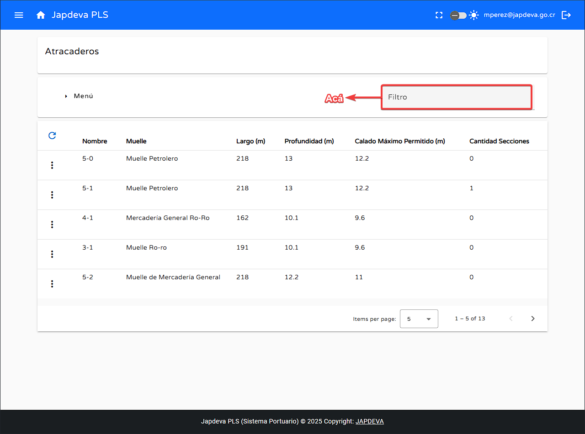
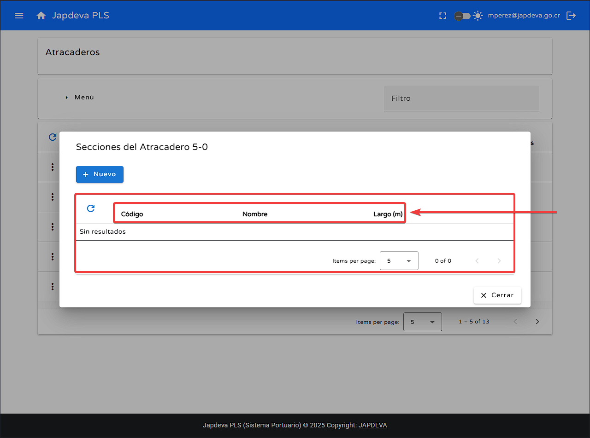

Bienvenido a la guía de usuario para la pantalla Atracaderos del sistema PLS. Esta guía está
diseñada para ayudarte a utilizar y comprender de forma sencilla y directa las funcionalidades que ofrece
esta pantalla.
1. Introducción
La pantalla de Atracaderos se encuentra dentro del submenú Almacenamiento de Datos y
lo que brinda principalmente es la posibilidad de registrar, editar, eliminar y ver información de los
atracaderos existentes en los diversos puertos de JAPDEVA.
Consejo: Esta guía está diseñada para ser leída en orden, pero puedes saltar a las
secciones que necesites usando el menú de contenido.
2. Funciones principales
1
Registro de un nuevo atracadero
Dentro de la pantalla de Atracaderos nos situamos sobre el botón Menú y le
damos clic para acceder a la opción de Registro nuevo y sobre esta nueva opción también damos
clic.
Una vez dentro de la pantalla de nuevo registro se debe de rellenar todos los datos necesarios para
que el registro de este nuevo atracadero sea exitoso.
Pero antes de rellenar los datos del atracadero veamos cómo es la pantalla de registro de un nuevo
atracadero.
Con lo anterior claro, es momento de comenzar con el registro de los datos para un nuevo
atracadero.
Registro de Atracadero
Muelle: Se debe de seleccionar en que muelle se encuentra ubicado el atracadero
según la lista brindada por el sistema al momento de su registro.
Número: Se refiere a la posición numerada del muelle en la que se encuentra el
atracadero. Por ejemplo: 1, 2, 3, etc.
Largo: Distancia en metros que posee el atracadero respecto a la línea del muelle.
Siempre debe ser brindado lo máximo de metros que permite el atracadero.
Profundidad: Profundidad máximo marítima que posee el atracadero en relación a lo
largo del puesto brindado en el muelle. Se debe de brindar siempre la profundidad máxima
existente.
Calado máximo permitido: Se refiere al calado máximo que permite el atracadero en
relación a lo largo y profundo del puesto brindado en el muelle. Se debe de brindar el calado
máximo en metros.
Secciones: Se refiere a la cantidad de secciones que posee el atracadero y su
largo. Por ejemplo: A, B, C etc.
Descripción: Descripción relevante de la instalación del atracadero.
Con todo lo anterior ya relleno y seguro de que son los datos correctos se puede dar clic en el
Guardar para finalizar el registro del
atracadero.
En caso contrario si la información no es segura o simplemente se desea cancelar la inserción de un
nuevo atracadero se puede dar clic en el botón Cancelar para cancelar el
registro.
Advertencia: A excepción de los campos Secciones y Descripción todos los
demás campos para el registro de un nuevo atracadero son de índole obligatoria.
2
Función búsqueda por filtro
Para realizar una búsqueda mediante filtro que sea satisfactoria debemos de hacer lo siguiente:
Nos posicionamos dentro del espacio en blanco de filtro

Ingresamos un valor de filtro y la tabla mostrará automáticamente los resultados relacionados.
3
Función refrescar información
Para lograr refrescar la información a tiempo real con la más actualizada posible realizamos lo
siguiente:
Ubicamos nuestro cursor sobre el botón de refrescar y presionamos sobre él.
Al momento de dar clic sobre el si existe información nueva se reflejara de manera directa en la
tabla presente en la pantalla.
4
Función ver información
Para visualizar la información de un atracadero ya registrado debemos de seguir los siguientes pasos:
Ubicamos el cursor sobre el botón de Opciones que se encuentra ubicado en la posición
izquierda del todo de la tabla presente en pantalla.
Le damos clic al botón de opciones y se nos desplegara un menú con varias opciones, pero la que nos
importa es la opción de Ver información que es la primera de este menú.
Con el menú anterior desplegado y ubicados sobre la opción Ver información se nos desplegará
toda la información relacionada con el atracadero seleccionado.
Seguida a la opción Ver información se encuentra Secciones.
Dentro de esta opción podemos ver todas las secciones existentes en el atracadero seleccionado
además de otros datos extra.
Los datos extra mencionados son los siguientes:
Código: Código relacionado con el atracadero seleccionado.
Nombre: Nombre de la sección del atracadero. (Si existe)
Largo (m): Distancia en metros que posee la sección con respecto al atracadero.

Además se puede agregar una nueva sección con el botón Nuevo y ahí mismo permite editar
la información de esta nueva sección.
Por último, brinda la funcionalidad de refrescar para actualizar la información en tiempo real.
Como tercera opción del menú emergente de opciones podemos encontrar la chance de Editar la
información del atracadero seleccionado.
Como su nombre indica, una vez que le demos clic a la opción Editar se nos desplegara una
pantalla de edición donde se podra modificar todos los datos del atracadero seleccionado.
Por último, se encuentra la opción de Eliminar que nos permite eliminar el atracadero
seleccionado.
Al darle clic a está opción se desplegara una pantalla de confirmación donde se podra concretar la
eliminación del atracadero seleccionado.
5
Visualización de información en pantalla Atracaderos
Para tener una visión general más clara de la información proyectada en la pantalla
Atracaderos se explicará de forma resumida los diversos atributos que se ubican en la
tabla presenta en pantalla. (De izquierda a derecha).
Nombre: Nombre del atracadero se conforma por el número de muelle (ubicación en puerto) y el número de sección.
PREGUNTAR
Muelle: Nombre del muelle en el que se encuentra el atracadero.
Largo (m): Largo total del atracadero en metros respecto a la línea del muelle.
Profundidad (m): Profundidad máxima del atracadero con respecto al fondo marino medido en metros.
Calado máximo (m): Calado máximo del atracadero con respecto al fondo marino medido en metros.
Cantidad de secciones: Cantidad de secciones que posee el atracadero.